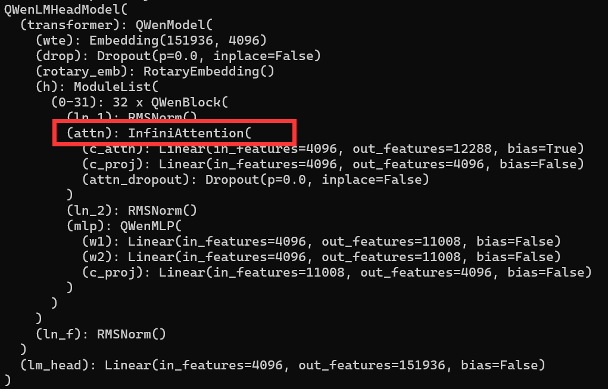
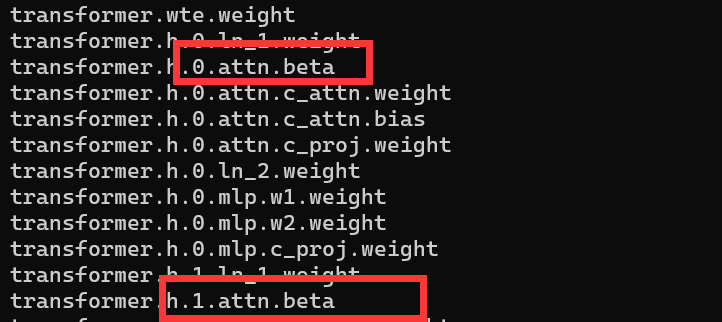
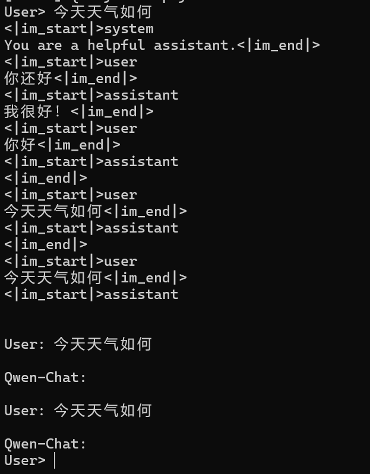
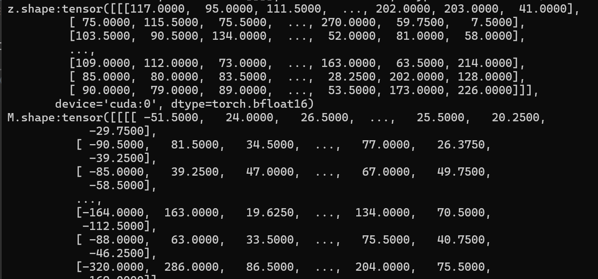
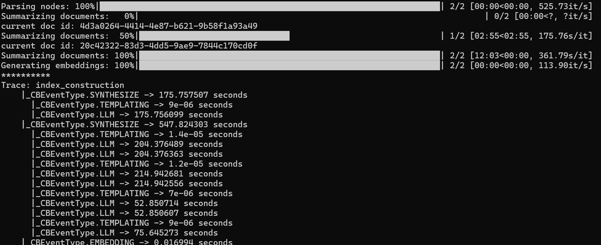

DailyRecord-May
5.1 —— 5.5
5.1 五一假期的第一天。再说一遍：我恨调休！我恨调休！
昨天晚上21：46的火车，早上6：35火车到站。只有站票，我和LT带了马扎上去，结果发现能放马扎的地方也很少。在4月中旬的时候，我和LT说一起回家，聊到站票买马扎的事情，我说我买两个，他不用买直接过来就行，结果他忘了自己也买了一个。于是多出了个小马扎。我是14车，LT是15车，他在15车帮我占了个位置，结果发现是厕所门口，而这个厕所的门还坏了，乘务员过来修反而把门直接给搞下来了；中途，LT试图将多余的马扎以15R推销出去，结果失败了🤣🤣🤣🤣。
每节车厢都带个厕所，因而站票大抵是都要在厕所附近窝着的我是不想当老八的，正好听闻说餐车那边有空位，因而我拎着我的两个小马扎过去找位子。到那儿发现餐车坐满了，估计都是站票过来买饭送座位的。餐车的尽头比较空旷，只有一个哥们儿在地上铺了个纸躺着。我在这儿蹲了下来，LT怕被赶走，让我看看情况，半小时没人赶就叫他。确实没人赶，然后他就过来了，过来一合计，吃点东西，然后去问有没有空位。乘务员腾了两个相邻的位子给我们，然后96r，没得选择，两人吃鱼香肉丝饭。我吃了一碗半，LT吃了两碗半。吃完后，可以名正言顺的占用餐桌。
由于跨月，因而碧蓝航线要刷一下大世界的剩余体力，玩手机到1点，LT默默陪着我一起玩，我放下手机趴下他也趴下了。说实在话，虽然有坐，但是不安静，乘务员嘈杂，他们不关心你是不是在睡觉；尤其是2点多乘务员集体早餐，我们那个位置需要暂时让一下给乘务员吃饭，吃完饭一般立刻就走了，但是有不走的留在桌子上、东百口音的男的在吹牛逼，不压低声音。总而言之，到4、5点的时候，我们也只睡了质量很低的断断续续的2小时左右。然后到了开早饭的时候，被乘务员撵走了，我们到了餐车末尾的地方蹲了一小时，又被撵走了。
总之，6.35到车站，然后LT他妈妈开车来带我们，把我送到家。妈妈在家等我，我洗了个澡，然后七点多开始睡觉，一下睡到中午12.30。然后去门市吃午饭，牛肉啥的，家常菜。啊！家的味道！
下午，LSH叫我出去上网，我们把LT叫上了。线上叫了道哥，以及我的研究生同门SH，凑了五黑，大大乱斗。下午两点打到8点，十几把输了两把，爽赢！网吧有茶水售卖，喝了红茶。
然后，我骑的自行车留在了网吧门口，LT开车带我、LSH、SXZ一起去步行街吃龙虾。喝啤酒、吃下酒菜，倾诉一下，聊聊在北京一个月的一些经历和感想。啤酒喝晕了，他们驾着我打车去浙江商城那儿的KTV唱歌。我真不知道自己是怎么过去的，只知道自己被人驾着。到那儿，躺到了0：30，醒了，唱歌到2点，走路回家睡觉。
和朋友们喝酒是开心的、唱歌是开心的。
5.2 五一假期第二天。中午去我爹那儿吃午饭。我的大爷、我爸的新对象和那个女儿也来了，喝了点啤酒，聊了聊一些烦恼。但是在这里接收到的只有“努力！拼搏！”一类的大道理、大男子/大家长主义的说教。挫败，再次决定不应该向这里倾诉一些东西了，在母亲那儿更放松一点。但这个家族氛围就是这样，总体上还是和睦的、较好的，一些东西应该学会去忍受。
下午，依旧昨天的配置、昨天的阵容，今天点了枸杞菊花茶，因为感觉这个好像是明目的，最近感觉视力有所下降。一开始连跪，沉默不语，然后连胜了，最后打到18点多，光荣下播！
骑着自行车到门市吃饭捏，家的味道！*2🥰🥰
5.3 五一假期的第三天。中午去我爹那儿吃饭，下午还是和他们一起去网吧。晚上去门市吃饭，之后去了舅爹舅奶家。看了看菜地、菜地边上舅爹晒太阳的破沙发。我妈看生菜长得好要了点回去。之后，在地下室的屋子里面坐着聊天，临走时，我把装在信封里面的、从银行取出来的新钱2k给了舅爹舅奶，实习工资的一部分，很有纪念意义。感到舅爹舅奶有点手足无措、又有点失落。
5.4 五一假期第四天。中午去门市吃饭，然后在家里躺了一会儿。下雨了，NZY告诉我他在初中部那儿和初中老师吃饭。LT开车去带了他，还带来了HL。我们一起在网吧打了一两盘，他们就都走了。HL感觉没啥精气神儿了，这班上的。NZY也好像有点心事，感觉他不像以前那样开心了。晚上，到门市吃饭，和妈妈一起回家。
5.5 今天回百京。下雨，早起坐上去宿迁的车，大概9点到高铁站。13点多到百京，点了个东北铁盒饭外卖，到出租屋的时候吃。下午和SH打了大乱斗，一直输。在出租屋没事干，混日子呗。
家里真舒服啊！真舒服啊！
5.6
复工。查看五一期间跑的训练怎么样了。发现训练没跑完，然后vscode远程sshA800也连不上了，但是bash可以连。百思不得其解。终于发现原因是保存的checkpoint文件太多、把硬盘填满了（本来剩下几百G）。测试checkpoint的效果，正常问答和指令问答效果都很差。看样子需要重新斟酌。需要仔细选取数据，进行调整。或者直接放弃改底层模型，因为这导致训好的模型被利用的很差。
此外，加载模型时候有这个提示：
1 | Some weights of the model checkpoint at output_qwen/checkpoint-2000 were not used when initializing QWenLMHeadModel: ['transformer.h.0.attn.bias', 'transformer.h.1.attn.bias', 'transformer.h.10.attn.bias', 'transformer.h.11.attn.bias', 'transformer.h.12.attn.bias', 'transformer.h.13.attn.bias', 'transformer.h.14.attn.bias', 'transformer.h.15.attn.bias', 'transformer.h.16.attn.bias', 'transformer.h.17.attn.bias', 'transformer.h.18.attn.bias', 'transformer.h.19.attn.bias', 'transformer.h.2.attn.bias', 'transformer.h.20.attn.bias', 'transformer.h.21.attn.bias', 'transformer.h.22.attn.bias', 'transformer.h.23.attn.bias', 'transformer.h.24.attn.bias', 'transformer.h.25.attn.bias', 'transformer.h.26.attn.bias', 'transformer.h.27.attn.bias', 'transformer.h.28.attn.bias', 'transformer.h.29.attn.bias', 'transformer.h.3.attn.bias', 'transformer.h.30.attn.bias', 'transformer.h.31.attn.bias', 'transformer.h.4.attn.bias', 'transformer.h.5.attn.bias', 'transformer.h.6.attn.bias', 'transformer.h.7.attn.bias', 'transformer.h.8.attn.bias', 'transformer.h.9.attn.bias'] |
attention的bias和我后面新加的beta参数，没有从模型中加载到。为什么？bias这个好像不影响。但是beta是核心参数，没了直接乱说一气。
开发大哥那边需求连接服务器，需要服务器接上wifi，同时能够连接A800。本以为是个改路由的大工程，但是没想到直接接入网络就行了。也许是接入网络先后顺序的问题？搞不懂。
改了infini里面的结构，本来是融合后在projection，我把projection放前面了。因为我不想动这个projection的参数，只想训练融合的参数信息。不知道结果会怎样。如果后融合的话，projection的参数也要变，模型本身能力直接寄。
晚上，开了例会。前辈哥给出了问题的可能解决方法，明天需要测试一下：
- 检查checkpoint目录下的config.json、modeling_qwen.py文件是否与预期一致
- super().init(config) 移到最后，检查是否是继承类的初始化问题
此外，对于c_proj是否需要调整位置的问题，建议还是先不调整试试，一般影响不大。
晚上，和LT、SH一起大乱斗，赢！
- 明日任务：测试解决方案是否可行
5.7
测试昨晚商讨的解决方案。无效果。
尝试打印模型结构和参数，结果显示attn已经修改，且模型参数里面有beta：


没办法，上不去下不来，卡在这儿了😅
看了一下相关的issue，似乎是加载模型的问题，好像要改from_pretrained。
来自ZYR的场外支援！开了个腾讯会议，排查了两小时，确定是from_pretrain的问题！我到这不知道该怎么办，他给出了另一种加载模型的方式：
1 | from transformers import AutoConfig |
在此之前，需要将safetensor逐个转化为ckpt文件：
1 | from safetensors.torch import load_file |
将safetensor转化成ckpt，然后加载。加载的比from_pretrain慢好多！但是问题解决了！我必须立刻去研究一下这个加载方式的原理！
真得给我朱哥磕一个吧，帮我太多了！
safetensor是安全的，也就是说为了确保安全性、不包含恶意代码之类的，就要限制其中的东西，因而不让改动，也可以理解。 我定位到了问题，但没能解决的原因，在于对权重文件及其加载了解不深入，实际上这对我是傻瓜式的操作、黑箱。
晚上没有战斗，混日子捏……感觉不到啥拼搏的动力，浑浑噩噩月光族也是活着……
- 明日任务：测试训练好模型的效果
5.8
昨天的代码，默认是在cpu上加载模型的，需要改成如下格式
1 | device = torch.device("cuda") |
对话效果烂了。我决定照着原论文的结构来复现，再训练一遍，看看到底怎么回事。
看了过程中tensor的shape，似乎之前的代码shape不对？也许效果不好的原因就在于此。改了之后再跑训练看看效果叭！
趁着训练的时候，查看ckpt和safetensor的区别。ckpt这种文件似乎是torch的官方保存方式，以dict形式存储torch.nn.module的模型结构及其对应的参数，在加载的时候使用torch.load加载。这个过程是很直观简单的。（正常训练结束的文件，好像应该是.pt或者.pth？）
以下内容来自网络：
- .ckpt文件是Pytorch Lightning框架中使用的模型文件格式之一。Pytorch Lightning是一个基于Pytorch的轻量级深度学习框架，它提供了更简单和更高层次的API，用于训练和管理深度学习模型。.ckpt文件保存了模型的参数和优化器的状态，并且通常还包含训练的元数据信息。
- .pth文件是Pytorch中最常见的模型文件格式之一。它是一个二进制文件，包含了模型的参数和状态。.pth文件保存了模型的权重和各层的参数，可以方便地用于加载和恢复模型。通过保存模型为.pth文件，我们可以在需要时重新加载模型，并使用它进行预测或继续训练。
也就是说，pth是base，ckpt是进阶，safetensor是再进阶？知乎上这篇解释safetensor还不错。
看了一些讲解，了解到，不同类型的模型、训练方法会自定义save和load的方法，文件名之类的也有差别，这种要具体情况具体分析。
修改模型之后，重新训练，结果还是像以前那样，只能回答第一句话，后面的话无了。其原因在哪儿？需要print以下tensor的情况是否存在之类的。目前的猜想是：首先，不可能是训练数据只有单轮对话的原因，因为这无非是输入长短的问题，不应该是一点输出都没有。在多轮对话中，一点结果都不返回的话，说明第二轮及以后的decode都是<!i’m end>这种东西；这个问题的原因，可能在于魔改模型烂了，M和z对后续输出造成了很坏的负面应用，这个方法不通；也有可能是ft的方法、量级不对。亦或者，一个原因是M和z使用、更新的顺序出问题，导致后续decode无法进行之类的。因而，目前首先需要print所有decode的结果，而非对话

输入之后，print出make_context中raw_context的结果，发现decode的结果是直接无了。思考这个现象出现的原因，应该是魔改模型+ft导致模型本身的能力被破坏殆尽；训练数据中都是单轮对话的数据，因而无法decode出多轮对话的结果，它输入进去的都只是一个system+user的对话，过拟合导致只能输出一轮对话的结果，后面直接decode成end了。
这个猜想的可能性是很大的。目前，不能确定自己魔改的代码在思路上是没有问题的，因而：
- 可能需要再仔细斟酌一下代码修改，需要查看这个decode过程中的tensor(句子、M、z)；
- 也有可能代码没问题，纯因为这个方法需就是烂，水出来的；
- 也有可能是需要大量数据喂进去才能看到效果。
- 也有可能，是safetensor向ckpt转化过程中损失了参数；因为似乎ckpt to safetensor是可以无损的，而反过来不行，因为safetensor是一种压缩、精简的格式；
查看M和z在forward过程中的数值更新：

查看M和z的具体数字后，发现其过大，没收敛在一个固定范围内😡。但是、似乎、好像、Attn的结果，是M和z除；因而Attn不会受到太大影响才对？
感觉脑子不够用了，一天能认真思考的时间好短捏。思考多了头晕。（tmd不是因为我节食了营养这一块儿没人给我补吧？）
好吧，确定一下思路：修正M和z的更新公式，使得其稳定，需要参考另一个论文实现的开源项目，这个项目适配了llama和Gemma，应该是好的。
- 明日任务：修正M和z的更新公式，力求将其限定在一定范围内波动，避免数值溢出。
5.9
查看上面说的开源项目llama版本的改动，发现其在初始化阶段只初始化了beta，且beta是一个和MHA的shape相匹配的tensor而非单独的数值。这样，每个头有一个参数，似乎更加符合论文中的做法：
1 | self.gate = nn.Parameter(torch.full((1, self.num_heads, 1, 1), 0.0)) |
modeling的代码中有past_kv，查看这个tensor是否存在、shape是否合理；按理来说这个应该是自增的。
确实是随着token的逐步decode递增的，第二个维度是query_len，输入+prompt大差不差是这个数。
又回顾了M和z的具体数值，发现主要是z过大，那么最简单的方法就是对z做norm，但是这个操作没出现在论文中，最好还是再分析一下代码是否有问题。
再去看一下论文：
原来z只是归一化的分母，它就应该是大的，无所谓；但是M不应该是大的，这个问题出现的原因，可能是代码实现中没有关注 “element-wise” 这个操作
修改完之后，再次训练，预计下班后能训好。这次训练查看效果，还是重点关注两方面的内容：
- 对话是否正常
- 如果对话不正常，则查看M和z，尤其是M，需要控制其在一定范围内
M为什么会突发性的过大？这个M的公式上看，增量更新应该没问题，也许是代码写的不对？
查看代码，感觉没什么问题，再仔细看一会儿，真没问题那就没办法了。
训练中断，加载checkpoints-1000的参数看看能否多轮对话，似乎有多轮对话的能力；但是没有看M和z的具体数值。又改了代码。把beta改成了shape为[1, 1, self.num_heads, 1]的tensor，再次训练，看看效果。预计明天看看今天训的两个模型的效果和M、z的具体数值。
- 明日任务：查看两次修改的ft效果，明确是否是数据量不足的原因；思考限制M和z范围的方法；
5.10
昨晚跑一半服务器断了，今早发现连不上服务器了，ssh也不行。
静观其变，相机而动！
继续看一下streaming-llm的论文和源代码，这个项目的star涨的好快，现在已经有6.2k了，看样子很有可取之处。这个论文的核心思想还是sparse attention机制，只不过是在观察了attention logits的数值分布特征之后，提出的针对这个特征的sparse方案。
另：win11上配置ssh server的教程，就是nm几mb的东西为什么安装的那么慢？而且还安装失败？————好吧，似乎是梯子的问题，把梯子关了之后正常安装了。和pip换清华源之后不能开梯子install有异曲同工之妙。
streaming-llm对positio embedding也做了调整，感觉如果改qwen1的话会很麻烦，因为它的代码不明晰。
分析一下streaming-llm种modify_llama.py文件的思路：
1 | def apply_rotary_pos_emb_single(x, cos, sin, position_ids): |
这个函数的作用，顾名思义是进行RoPE；而“single”的意义在于，指定位置进行RoPE，而不是一整个raw context。这个函数的作用正好和论文中的 “根据cache进行位置编码” 相对应。通过这个函数，可以自由选定、构建token组进行RoPE。
我也查看了qwen1中的RoPE，应该就是这样，没有问题。
下午nm给拉出去干杂活，说明天早起去那儿打下手现在去踩点😅，挤在出租车上有点晕；然后nm到中关村会议中心那儿啥事儿没干，蹲了一会儿出去找饭吃，吃了31的大盘鸡拌面，味道一般，比不上南京一根；然后吃一半打电话来说不用再回去了直接回家😅😅😅😅😅，纯dirty work了属于是。实习生牛马忍气吞声ing。
- 明日任务：当杂活、群演、牛马😅😅
5.11
今日，在中关村会议中心当群演和迎宾。纯牛马。
中午包饭，食堂比公司的好，比较有意思的一点就是酸奶居然都是一样的，而且都是摞起来给你自取。可惜之前吃了个卷饼和豆浆，不太饿了。
开会议，无事发生。大佬讲的“低空经济”这个词儿有点意思。
- 下周任务：看ft效果；改模型
5.12
再说一遍：我恨调休！我恨调休！
放一天真的啥事儿也不想干，也不想出去玩、吃饭，纯在出租屋躺一天。
晚上和SH、LSH、LT一起大乱斗，今天赢得比较多。
ZZK从上海的滴滴实习跑到了北京的快手实习，5.10入的职。这几天和他聊了聊工作怎么样啥的。他是早上10:30，晚上9点还是10点来着。在西二旗那边。预期下周和他吃个饭，他本科就是北京的，也在百京实习过，因而游刃有余一点。
聊到WXF、ZW的实习，询问过后发现他们还在找。唉、后端是不好活，ZXQ也在学校躺尸没找到实习……
5.13
再说一遍：我恨调休！我恨调休！
早上测试了A800还连不上😅。
接下来继续分析一下modify_llama.py文件的函数作用：
1 | def llama_pos_shift_attention_forward( |
- 这个函数的作用是，将前面的修改后的、带position_id的位置信息的RoPE应用到attention模块的forward上。从命名中可以看出这个用法。这个关键在于，对forward新增了一个position_ids参数，然后RoPE的函数重构一下，其他流程是和原生一样的。目前，没有在这个函数里面看见基于cache的RoPE，也没有看见sink attn的设置。
草！A800连不上的原因是安徽那边的看机器的人用root账户把东西搞烂了，现在正在修，环境啥的都没了，都要重新配置，真NM无语了，有这种事啊？
在分析上面代码的过程中，突然对自己之前修改的model产生了质疑：tensor的shape是否正确？我需要查看原生的output tensor shape和修改后的output tensor shape是否一致。此外，还需要输出一下past_key_value的shape，这我之前咋没想到看呢？也许是model_qwen里面没有?好吧，之前看过，但是时间太长我给忘了，嘻🤗🤗。
1 | torch.Size([1, 407, 16, 128]) # past_key_value[0][0].shape 这个也许是k的shape，如果是[1][0]则是v的shape？ |
而原生model，print attn_output的结果是：
1 | attn_output.shape:torch.Size([1, 404, 2048]) |
前面q_len一直是404，后面一直是1。但是这个没分开num_heads，捏妈我改的代码不会就是因为这个所以效果不好的吧？
赶紧查看：
1 | attn_output before c_proj.shape:torch.Size([1, 419, 16, 128]) |
虚惊一场，代码里面attn一直是这个形状，中间的merge后的形状是context_layer这个中间参数；modeling代码里面的shape也没问题。
modify_llama.py三个函数中的最后一个函数是：
1 | def enable_llama_pos_shift_attention(model): |
这个函数的作用很简单。
看下来之后，感觉论文中提到的sink和基于cache的RoPE似乎没有实现？此外，softmax的修改也没体现。
服务器上面的代码失去了，我这里没有备份；幸好一些关键代码不多，我还记得：
safetensor逐个转化为ckpt文件：
1
2
3
4
5
6
7
8
9
10
11
12
13
14
15
16from safetensors.torch import load_file
import torch
import sys
import os
import glob
DEFAULT_CKPT_PATH = 'Qwen-7B-Chat'
CUDA_VISIBLE_DEVICES = '2,3,4,5,6,7' # 0、1卡已经部署了研究院那边sft好的模型的api
device = 'cuda'
file_paths = glob.glob(os.path.join(DEFAULT_CKPT_PATH, '/*.safetensors'))
for path in file_paths:
weights = load_file(path, device=device)
weights["state_dict"] = weights
torch.save(weights, os.path.splitext(path)[0] + '.ckpt')构建训练数据make_train_data.py：
此代码在四月份的记录中已存，具体是4.28的记录修改cli_demo.py中的加载模型部分：
1
2
3
4
5
6
7
8
9
10
11
12
13
14from transformers import AutoConfig
from safetensors.torch import load_model
import glob
config = AutoConfig.from_pretrained("/home/zhangshuo/Qwen-main/Qwen-7B-Chat-Mem")
model = AutoModelForCausalLM.from_config(config)
DEFAULT_CKPT_PATH = 'Qwen-7B-Chat-Mem'
file_paths = glob.glob(os.path.join(DEFAULT_CKPT_PATH, '/*.ckpt'))
CUDA_VISIBLE_DEVICES = '2,3,4,5,6,7'
device = 'cuda'
for path in file_paths:
model.load_state_dict(torch.load(path), strict=False)
model.to(device)- 明日任务：阅读kv_cache.py，吃透总体上的代码逻辑
5.14
昨天夜里领导突然告诉我，让我到昌平区的那个地方的公司去帮忙，说那边任务紧急。
然后就过去了，早上坐了一个多小时的地铁，9点才将将赶上到那个园区里面，早饭也没吃。到那儿，在找中心B座的时候遇见做数据的实习兄弟S，原来他也被派来了。俺们在园区里面迷了一阵子路，最后找到了。
到那儿，给我们安排到一楼的工位，似乎是因为公司部门在三楼的工位不够了。说是有下载huggingface数据的任务，但是一楼工位又给我们申请了工作账号，用来派发数据校验审查的任务，通俗来说就是打赛博螺丝😅😅。这边的人倒是挺好的，给我们讲解怎么做，然后时不时来问问有没有遇到问题，但是跑大老远的紧急任务就是打赛博螺丝真是让人无大语。
中午，也不知道有啥地方吃饭，公司在这边带我们的F大哥的话，我和S兄跟着人流，到了园区外面的饭馆。哪儿是一排面馆的聚集地，但是也卖盖浇饭什么的，总之是接地气的快餐。人很多，我点了辣子鸡丁盖浇饭，等了好久才吃上，味道和分量都不错。价格也比较便宜，比宣武门公司和出租屋那边都便宜，而且是现炒的，有锅气。
吃完饭，买了瓶饮料，回去工位，勉勉强强睡了一阵子。下午继续打螺丝。临到下班问F大哥，数据集下载的硬盘在哪儿，大哥说明天给😅😅，合着今天来真是就打赛博螺丝啊！
哎！宣武门那边工位上的键盘、被子、药、手机充电器都没带来！
周边的绿化倒是挺好的，楼顶很高、楼很大、给人空旷开阔的感觉，毕竟是郊区。看了看周围的房价，发现自如上的不便宜。然后NJ找的58同城上的巨便宜，还是单间！不贵！比现在出租屋那边条件好太多了！我草tmd自如！！！如果要呆在这边时间长，那肯定是要搬家的。但是一切未定。问到底在这干多久，领导也说不确定😅😅😅😅😅😅。实习生牛马呗！
快下班的时候告诉我明天回宣武门那边聊一下到底怎么做、后续做啥、是在哪边的公司😅😅。真是折腾人！不能今天正常上班跟我聊吗！
怎么说呢，今天的经历，给了我很强的跑路理由，之前顾虑到沈老师师姐这边，总想着忍一下吧，忍忍过去了！但是今天发现，正常的研究都不打算让我做了，国企这边管理混乱、没有主线。那我跑起来是心安理得，心情反倒感到轻松了不少🤗🤗。
琢磨琢磨后面能投哪儿的公司捏~~反正不想待百京了
- 明日任务：寄！开摆喽！
5.15
关于sink attn和cache RoPE的部分，实现似乎在kv_cache.py中，这里记录并分析一下这个代码：
1 | import torch |
阅读完毕之后，发现还是有点搞不懂他这个代码是怎么运行的，还得看一下它这个运行的run_streaming_llama.py的代码。需要明晰的是，这个总体上的思路应该是：写class、method满足基于cache进行RoPE的需求、动态维护一个sink + window的cache需求，然后在llama模型中运用这个方法，在生成的forward过程中，替换成sink + window
查看一下官方实现的以streaming形式运行llama的代码：
1 | import warnings |
这里我去看了一下qwen里面的logits的相关数据：
1 | print(lm_logits) |
一开始seq_len维度的是query的长度，然后[…, :-1, :]这个操作正如之前所说的，减了一个维度，只把最后一个时间步作为预测结果。
在第二个时间步之后，可以看到print的结果，seq这个维度是1，削减之后是0；之后就一直是[1][0]循环了。[…, :-1, :]就纯没有结果。
那么，也就是说，内部这个lm_logits在第一步输入的时候会进行一个整的计算，然后到了生成token的时候，这个lm_logits就是一个单词表长度的概率分布了，直接从这个概率softmax再decode啥的出一个token。
那么pred_token_idx就是根据logits而decode出来的token了。
1 | generated_ids = [pred_token_idx.item()] # 这里取出预测出来的id |
总的来说，这个method是一个获取model输出概率并进行greedy decode的过程。没有看见之前改的kv cache在此有应用
1 |
|
实现streaming-llm，主要是对模型的kv_cache及其forward机制进行修改，对model的forward也会进行修改；此外，在generate上也需要进行相应的调整。
而像是qwen中的cli_demo.py，其对话的print之类的东西也要调整，总的来说感觉这个调整是全面的，而非单一改算法。
那么，项目全部阅读完毕之后，确定一下modeling_qwen修改的思路：总的来说，各种文件大抵都可以结合modeling_qwen.py的源文件相关部分进行一些调整；greedy_generate这个修改，在qwen中应该是chat/chat_stream，而非generate
中午，和Z哥一起去吃沙县小吃，颇有感慨。想起自己初中的时候，很喜欢吃小区门口那家沙县小吃的肉丝饭，11块，经常去吃，有时候家里做了饭，但馋那一口，也会去吃；记得有一次，我已经过世的奶奶做好了饭叫我吃，我说不吃，去买沙县小吃吃，买回来她看到，说“就这个东西啊”。哈哈，她也没有逼我吃家里的饭。倒是现在，想吃一口，终究也是吃不上了。
上了高中，由于学业压力大，加之没啥钱，有钱会去上网吧，似乎就再也没吃过那家沙县。大学再去，发现已经关门了，吃其他沙县也找回不了记忆里的感觉。想来，沙县或许是我初中生活的一个缩影，有和朋友在沙县吃的记忆、有坐在电脑前打游戏吃沙县的莫名其妙的很舒适的感觉。然而一切都已过去，我也找不回那种懵懂、纯粹快乐的感觉。
晚上，线上会议，纯看客。开完和LT，NZY和她对象打大乱斗。捏妈，向N开炮似乎给人姑娘吓着了，后面麦都没啥声音😨😨。
- 明日任务：将streaming-llm实现到qwen中 or 接手今早才跟我说的多路召回检索优化项目
此处记录streaming-llm应用到qwen上的一些具体修改
enable_streaming_llm.py
1 | # 在elif新增： |
kv_cache.py + utils.py
似乎不需要改动；kv_cache.py是感觉没有需要改的；utils.py是下载、加载数据的class，暂时没打算用这个。而且应该可以照搬过来用
pos_shift/modify_llama.py
这个文件夹下面，针对每个model文件都写了一个modify_xxx.py，那么qwen需要在这下面写个文件modify_qwen.py，应该是在llama的基础上进行修改即可。
1 | # 尚未做完，qwen1的model文件太混乱了，有很多多此一举的举动，有很多操作直接使用pytorch的原生方法就可以直接完成，它非要定义一个函数；传参什么的跟llama很不相同；而qwen1.5的model文件就和llama很近似。 |
5.16
今天继续尝试将streaming-llm适配qwen1，但是进展不理想，具体内容如上面的代码注释所示。问题出现在streaming-llm的核心代码，其中使用的基于cache的RoPE在qwen中应用难度较大。因为qwenattention的forward中没用position_id这个参数，于是去参考另一个modify_falcon.py文件，因为这个的model文件也是没有position id的。但是，结合其modify文件和model文件之后，没发现有很明显的应用基于cache的RoPE做法。仅仅是基于past len做了一些调整。
或许，modeling_qwen的修改，在attention部分，应该也是像falcon中进行past_len这个参数的设置和应用。然后，对于kv_cache.py这个文件直接使用，然后再改写chat方法，基于改写后的chat方面写cli_demo.py。正如之前所说，这个流程应该是一个综合的过程。或许qwen1里面只要应用kv_cache.py对它这个模型的kv_cache进行修改后，自动RoPE就是水到渠成的基于cache了。
- 明日任务：应用今天的思路，修改qwen
5.17
把RoPE中cur_len的部分，参照modify_falcon.py中，修改成了past_len。但是应该最好还是qwen1.5修改为佳。
这个项目还有一个问题就是greedy decoding，没有温度、随机性啥的。
无奈了，终究不能搞长文本了。领导要看到效果，立刻转战多路召回检索优化。本以为逐渐稳定步入正轨，终究是一厢情愿。人在江湖，身不由己！
看了项目已经写好的基于llamaindex + fastapi的代码，但是因为没有readme，代码也没用注释，所以看的一头雾水。
- 下周任务：人在江湖噜~~研究多路召回的实现，从读懂代码开始！没开发规范真是烦人！草台班子说是！
5.18 - 5.19
周六，本来和ZZK越好下午三点半在北京动物园碰面，结果我一点睡午觉睡过了，还是他打电话过来我才醒。急急忙忙地赶过去，已经四点半了。他去买了饮料，然后我们刷票进动物园。
进熊猫馆的时候，发现ZZK买的是不带熊猫馆的票，结果他又买了一份，然后尝试退之前的票，失败；尝试退刚买的票，失败；因为两张票都已经被实际上使用过了🤣🤣，铸币吧。
下午，这个时间动物们都没什么精神，熊猫趴在那儿睡觉，看不见正脸。有好长的队在排一个好像是网红熊猫的馆，我们嫌太长就没凑热闹。幸运的是，在熊猫馆里面逛了一阵子，正好遇见一个大熊猫打盹结束出来逛逛，拍下来了。
之后，在动物园里面其他地方逛，边逛边和ZZK聊天。看了鹦鹉、狼、羚羊、北极熊啥的。都是懒趴趴的。
走到大概六点多，逛累了，于是我们走去德凯mall吃一家绿茶餐厅，好像是杭州菜😅，真是明知美食荒漠，偏向荒漠行呀。点了荔枝虾球和抹茶饼两个甜品，可惜这个虾球很一般，不是我记忆力高三暑假和ZZC一起去杭州在新周记吃的那种。招牌菜一个糖醋口的排骨，难吃😅；烤鸡、烤肉片、竹笋这三道菜中规中矩，但这tm好像也不是杭州菜，无语子……
铸币ZZK一开始还想点西湖醋鱼，幸好给我拦住了。
之后，在商场-1层的超市逛了逛，然后准备回去了。在luckyin买了两杯咖啡，中途聊到WXF，和他打电话，约了下周俺们三一起去爬八达岭长城噜。
晚上到出租屋，和LSH、LT、SH打游戏，十点多的时候把咖啡喝完了。结果，晚上，不知道是热的还是因为咖啡，睡不着，开空调舒服点，但是也睡不着。迷迷糊糊到三点多似乎才睡着，结果六点多好像就醒了。捏妈的，一上午都状态不太对，还好不上班！
周日，混。改了简历，投了TX实习。晚上和LSH、SH、LT、NZY、WS打大乱斗。感觉得控制一下自己的脾气的，唉，严于律人宽以待己。
感觉没有什么外卖点了，附近的外卖没有想吃的。不知道什么情况，提不起劲，愁啊！ 、
5.20
早上看昨天投的结果，秒挂了尼玛的，简历秒挂！
继续看项目代码，似乎有点明白结构和用法了。
下午发现被tx捞了，捏妈明天面试。
似乎懂了一点这个项目的结构。llamaindex似乎可以直接导入预先构建的索引，然后设置为model chat的参数，就可以实现rag。那么，我就要在这个index的生成上做手脚？具体的明天再说吧。
晚上他们打游戏，我没去。看leetcode上的hot 100中的最大正方形面积，写了一种解法，结果和之前的一样，都只打败了5%的人。看来要看题解了，唉……
给SH开了个腾讯会议，讲了一下LLM的知识和细节，给他产品经理AI方向的补一下盲。
- 明日任务：多路召回
5.21
测试项目里面fastapi的功能，发现这个吊项目基本上跑不通，document的向量化以及基于知识库的chat都nm跑不通。问开发的，也支支吾吾的，草！这还让我加班这周把这多路召回跑通呢？这不纯坑人呢嘛！
下午有面试，中午回出租屋，发现门吸到了，安上之后，似乎有点效果，但比较麻烦；美美睡了一觉。
2.30面试，半小时结束，面试官摄像头都没开。让我写二叉树先序遍历，捏妈的非递归形式没写出来，还是得刷题！感觉是kpi面，草他妈滴！
面完，吃了个沙县小吃鸭腿饭，然后回班上干活。
全是坑啊兄弟们！没有开发规范，没有产品文档，我真是操了！
一个现在才明白的小知识:
1 | # a/b/c.py中 |
- 明日任务：多路召回
5.22 - 5.23
没啥好说的，改那个项目的多路召回部分。加班改。发现没跑通的问题在于，似乎是官方实现的代码有缺陷，chromaDB转化为vector store的时候转化不完全/没法正确转化，因而进行检索的时候是空集。
只能写死了，指定文档库的文件夹，然后直接从文档转化为vector index然后进行后续操作。
实际上，更精细的操作，还需要直接从document加载成node，然后像是summary index、graph index都可以从这个node创建。这样，就可以构建不能由vector index直接转化的index。后续，可以在chat里面加载各种index，构建多样化的retriever，然后整合起来。
- 明日任务：多路召回
5.24
早上改retriever，之前其他类型的index to retriever的部分没有跑通，可能是不兼容或者数据格式不对？
开了个会。发现在国企里面开发只需要做应声虫就可以了，提的意见和想法人家都当没听到。纯按照先入为主的理解在聊、派任务。反正我实习生不背锅，你咋说我咋做呗！
反正是准备跑路了，这边本来说的卡现在也没了，科研也不让做了，做开发还nm没人带，没有培养机制，还nm催进度。我的评价是草台班子一拖四。
回顾这段时间，本来刚来的时候和沈老师那边会开会，也有一些指导，但是渐渐会也不开了。本来说沈老师那边的学生们能一起聊一聊，结果那边的学生也就开了一两次会，就再也没来。由于距离遥远，感觉沟通的时候也很费劲。总而言之，刚开始的时候还兢兢业业，慢慢发现这边是个草台班子、研发队伍和管理机制混乱、缺陷较大。虽然学到了点东西，但是感觉不多。需要一个新环境、正式的、有明确培养机制的环境。
预计六月初辞职，然后面面其他的吧唉。总归是一步慢、步步慢。理想情况下是一月份就开始实习，然后4月辞职或是请假什么的投暑期实习，然后中途休息一下、旅个游啥的，然后暑期实习回来投秋招。但是现在，无可奈何地晚了两个月，只能步步紧逼，却又总是赶不及……
回顾从高中毕业到现在的时间，因为懒惰、愚蠢而导致的信息差，错过了许多机会、有许多可以更好的选择没有做出。悲叹没有意义了，只能吃更多的苦……

向项目里面加入了document summary retriever，这个需要调用llm解析文档，因而慢，或许换成embedding会好一些。
换成embedding的写法：
1 | retriever = DocumentSummaryIndexEmbeddingRetriever( |
但是没有测试，下周再搞！
llm解析时运行时报错：
1 | ValueError: invalid literal for int() with base 10: 'Doc' |
- 下周任务：多路召回
5.25 - 5.26
前两天，想起ZZK的推荐，在美团的小象超市上买了康师傅方便面、一桶酸奶、一包王中王火腿、一个2L冰红茶。
周六，下雨，预计的长城之旅移到明天。在出租屋歇着，玩玩垃圾页游，中午点了鸡公煲，油油的，吃到一半，开了一包前两天在美团小象超市上买的康师傅方便面加了进去，吃撑了。下饭的片是《哆啦A梦：大雄的宇宙小战争》。下午和LT、SH、WS、NZY打了大乱斗。
晚上，还吃那个鸡公煲。这次感觉不太行了，也许是我终于吃腻了，下饭的片是《哆啦A梦：大雄与机器人王国》，但是只看了大概三分之一？
今天一天爽喝冰镇冰红茶，简直就是仙酿！
周日，早起，去北京北坐高铁到八达岭。与ZZK、WXF汇合。书包里面带了昨晚在小象超市买的三个三明治和一个面包，以及三瓶盐汽水，一瓶大瓶怡宝。到站饿了先吃一个面包，在上长城的路上经过商区，看见有肯德基、蜜雪冰城……蜜雪冰城稍微贵一两块钱，神！但是饮料带够了，没买。昨晚还买了两板酸奶，但是忘带了，嘻嘻。
过了九曲十八弯的安检，又走了一段，才验票进入城墙。向上爬。或许是由于昨天下了一天的雨、亦或许是因为处于山林之间，长城上的北风很大，在城墙口吹的很凉爽，足以抵消烈日。城墙上人很多，慢慢地走、慢慢地爬。
可惜的是，ZZK似乎因为低血糖，爬了一阵子就撑不住，发晕呕吐；也有可能是爬长城前刚吃东西所以运动导致胃部不适应？总之，在爬到的好汉石那里，大概是北四段？（总共是12段），我们必须下去了。花了80r一人买了下山的缆车、抑或是过山车的票？哐哐哐一顿冲，没几分钟就到出口了。在出口，看看了一下黑熊，这个出口正好是“八达岭黑熊乐园”。说是乐园，只有三四只小黑熊懒懒的趴在那里晒太阳。
坐上了回去的公交，把预定的两点多的高铁票退了。唉，这两天为了这长城的来回，推了三回票，-11r。
公交一个多小时后到了啥门，忘了，我也不想去瞅一眼，总而言之是在恭王府附近。在附近找了饭店，排了队，一点多才吃上饭，饭店名字好像是长亭酒馆。点了韭菜炒虾米，炒一个啥菇，这俩菜是家里的口味。还有牛杂煲、生菜、小酥肉，我的评价是团购经典套餐。本来点了羊肉串，结果上来发现nm是小串，而且nm还是酸的，给退了。
吃完，WXF去看看他的另一些同学。我和ZZK一起，沿着后海逛，逛到了地铁站，聊聊天，蛮惬意的，最后分道扬镳，大概四点多，我回到了出租屋。
晚上要和ZYR、LF一起吃饭，所以六点开始睡觉补一补。本来预计的是九点吃海底捞，但是LF七点多就能回来，不是他之前说的大概九点，因而又变回涮肉。八点出头，我们就在西直门的聚宝源汇合了。吃涮肉的过程中，聊了聊各自的经历、心态什么的，也聊了聊八卦，还有一些不能言说的东西。吃完饭已经是十点多了，我们骑着自行车，去人民大学站的地铁站。欢乐的时光总是短暂的，唉！
11点多，回到了出租屋。明天又要上班了唉！
5.27
加拿大的后端实习生入职了。
在本地上测试了llamaindex中其他类型的index加入到多路召回里面，但是由于调用llm消耗过大、似乎与非llm的检索不能整合等原因，总之是整合失败了。
看官方文档的时候，突然看到，用一个index去生成不同的retriever，打开了另一个思路。于是基于vector index，又加了两个retriever。至于更多的，不是不想加，而是都需要llm或者之类的，总之是定制化支持程度不高，无法实现或是实现的价值不大。但是无论如何，多路召回的名头总算不是虚名了，目前是四路召回。
其中，三路召回是和embeddding模型深度绑定的，后面优化应该就是调整embedding。还有一路deep memory，似乎自己支持基于数据的训练。无论如何，再优化的话需要搞好训练数据集。
目前，这个多路召回还是本地，和知识库的联动没做好；因而，后端这部分的业务，还有需要做的就是把这个api整体上跑通。预计明天还是做这个东西。
看了leader和teacher分享的RAG方面的推文与项目，理解更深了。
- 明日任务：阅读RAG相关论文/后端api实现与修改
5.28
继续测试本地多路召回的效果，基本已经定型了。
晚上开会说，差不多可以推进在线的了。也就是说要调通api
刷了两道leetcode
- 明日任务：调整在线api
5.29
记录一下查看端口进程的命令：
1 | # 查看端口进程 |
尝试修复在线多路召回的API，正如之前定位的那样，问题代码应该出在这两行：
1 | chroma_collection = chromadb_client.get_collection(kb_id) |
collection显示doc是存在的，但是dict最后两个key显示的是none：
1 | 'data': None, 'uris': None |
vectorstore读取后，显示collection为空。
又去GitHub issue上看了一下，终于明白了解决思路：首先，这个问题其实不是vector store的问题，而是bm25计算的问题。在llama index中，bm25计算需要的是nodes，也只能通过nodes进行bm25的构建，并没有适配从vector store转化到bm25的api，这是源码本身的缺陷。
那么，解决思路也就很明确了：要么自己去改源码，适配这个转化；要么就搞一个返回document的函数，然后在bm25创建前面读取这个返回的document，再构建nodes传入。出于方便和稳定性考虑，还是采取后者，当然这种做法会浪费一些时间，因为预先构建的切片不能使用，还要再构建一遍。
修改之后，api可以跑通了。但是时间花费很大，不知道是不是因为gpu资源不足的原因。可以看到，生成query、SYNTHESIZE、LLM三步花费时间巨多。
比较奇怪的是，在之前的步骤里面，直接从本地文档读取的话，反而不慢。明明这修改后的代码只是额外生成了一次bm25，但是时间却增加了好多。难道是因为后续一系列数值要重新计算、结构要重新生成？
看来后续有很大的优化空间；此外，很有意思的一点是，这个用于bm25的、由document转化而来的nodes，其数据结构和chroma直接读取的collection似乎很相似，前者似乎是List[Dict{}]，而后者似乎是Dict{List[]}；没有细看，但或许可以写一个转化函数，直接转化成nodes的数据格式导入bm25计算。
晚上，和SH、LT打大乱斗捏。
- 明日任务：似乎要配合前端来展示项目总体的效果。
5.30
昨天的测试对话结果巨慢，但是今天，同样的东西，结果反而快了很多，直接变成了昨天测试的十几分之一？
后端对接了之前的前端，做了测试。发现这个前端基本都是写死的，对话、设置啥的没法调整，其实无法测试目前修改的效果。但是从fastapi和命令行结果来看，应该是没有问题的。
api里面document部分啥的还需要修改一下。今天修正了doc_index_create这个api。
下班前开会
下午，叶man阿姨突然打电话来，说周末可以吃饭。我一开始看到河北廊坊的号码还在好奇呢，以为是诈骗电话啥的都没想接，犹豫一下还是接了，没想到是叶阿姨！叶阿姨是我幼儿园时候，在俺爹开的小公司上过班的姐姐，后面虽然走了，但是和我妈妈关系很好，她们一直有联系。我也是大概大三？或是什么时候才加上她，但是刚加上的时候说了几句话，后面一直没联系，没啥说的感觉。这次趁我在北京这个机会，吃个饭，这很好！家里喝的茶叶似乎有不少都是叶阿姨给的。好久不见！也不知道如今能不能认出来，唉！我小时候对她的相貌记忆是一点也没有了！她的女儿在百京海淀区上学，马上高考了！我去！京✌！
刷了3道题，基本都是回溯。基本不会。基本看答案。需要加强。
- 明日任务：我不到啊！看一步吧！
5.31
今天和后端实习生一起测试了各种api，逐个排查，修正了一些bug。五部分的api，有三个部分都可以跑通了。
项目里面有一个小bad case就是，把id和name混淆了，函数名称啥的没改，在函数内部用查询把name转化成了id。
测试前端对话能否调用后端，主要是对话api。其他的前端内容基本上都是假的。对话有四类：
1 | CHAT_TYPE = ["RAG_CHAT","RAG_SEARCH","LLM_CHAT","RAG_RERANK"] |
前两个对话好像是一样的返回结果。本质上这俩对话没啥区别？
第三、四个对话，结果和前两个不一样。快下班的时候总算是跑通了。之前是ollama 显存不够所以没跑通。
- 下周任务：优质解答——我不知道